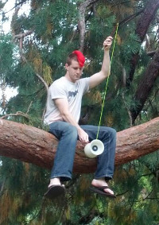

Every year when we do this kind of call for proposals, our experience from past events sets our expectations higher. Even with really high expectations this time around, we were blown away by the number of high-quality proposals we received for this winter. It’s inspiring to know how many people are thinking seriously about the development of privacy-enhancing technology, and we hope that one day we’ll have a space large enough to accept all the proposals that we wish we could.
The lineup for this January is set to be really great:
Cade (@helveticade) Cade is an Australian-based designer. Over his eight year career, he has worked on projects of varying sizes across Tokyo, Singapore, Sydney and Melbourne. Inspired by the challenges faced by early human computer interfaces, Cade’s current work focuses on emerging technology, privacy & security and socially responsible design. He is CoinJar’s Creative Director, and Design Lead for a small design consulting firm, Koyo. Cade writes music and is also completing research into generative music theory.
Natalie Wilkinson I am a videography student from San Francisco Art Institute, outdoor sports enthusiast, and general lover of things. I will be working on a promotional video for Open Whisper Systems as well as offering my services to the group should they have any ideas for digital media orientated artistic work. I yoga, surf, hike, climb, read palms and Lenormand, sing, listen, speak, poet, photo and video.
Sterling Radcliff (@radcliffx) Sterling is a software engineer “living” in San Francisco that enjoys skateboarding, hopping freight trains and learning new things.
Yoko Nakano (Yokz) (@yknakano) I have been working in the field of Human Computer Interaction for the past eight years as a user researcher, information architect, interaction designer, and a UX designer. I practice and preach design through empathy, collaboration, iteration and validation. On Winter of Code, I’ll be improving the user experience of existing iOS and Android apps as well as lending my hand on concepting new work and helping with the website.
Gregg Horton (@greggawatt) Gregg Horton is a developer and conceptual information artist living in Oakland, California. When he’s not writing code you can find him recording narrations of obscure anarchist literature over ambient music, exploring the intersection of surveillance culture and autonomous expression, or rambling through the redwood forest with his German Shepherd Husky mix. He will be building a privacy-conscious replacement for the Google Play store that will utilize his sick JavaScript skills.
Jessy Irwin (@jessysaurusrex) Jessy is a marketing communications professional working in security in San Francisco. She is an outspoken advocate for stronger privacy and security protections in education, and is currently researching the surveillance taking place in schools across the country. She can be found regularly ranting on Twitter, and her current passions include dinosaurs, big necklaces, tacos and caffeine.
During this year’s Winter of Code, Jessy will be using her knowledge of the “dark arts” of marketing, content strategy and public relations to create content that can be remixed, refactored, patched and reworked to fit the needs of users, contributors and developers. By working on updating site content and making information easier to find, she hopes to create a framework that can help the Open Whisper Systems community continue to grow and flourish. Additionally, she will be working on ways to communicate the importance of security (and the technology behind it) to users who may not understand why encrypted calls and texts are important – just that they need “something else” or “something secure” to use.
Riley Shaw (@rileyjshaw) Riley has a degree in electrical engineering and spends his time designing and writing software. He’s looking forward to getting nerd-sniped around a table of smart, friendly people at WBoC. He’s an avid kiteboarder, and really perked up when he heard that surfboards would be involved. Riley will be finishing up the interface for TextSecure-Browser and helping out with Bitorzo . Some of his past work can be seen at http://rileyjshaw.com.
Tina Huang (@kmonkeyjam) I am a software engineer with a passion for technologies that empower open communications. In the past, I’ve worked on Blogger, Google News, and Twitter, and I love the role open whisper systems plays in providing a secure means of communication. I like building resilient distributed systems, so I’m hoping to make the mobile sign-up process more robust by tracking some stats around SMS confirmations during sign up and improve SMS delivery. I also love to surf, especially when I don’t have to put on a wet suit.
Jack Rogers (@jackflips) I’m a CS student at UC Santa Cruz whose interest in privacy tech was sparked after a judge in a hackathon here called my project for protesters “un-American.” I’ll be working on the iOS side of TextSecure and attempting to live up to a mumbled “yeah, I can almost surf.”
Emily Chao I’m a sophomore studying Computer Science at the University of Illinois at Urbana-Champaign. I’m deeply interested in web development and want to learn more about security, cryptography and user information privacy. I just want to learn about everything technology-related! If not coding, I like singing along to my 4-hour long Spotify playlists and exploring new places. I’ll be helping out on the TextSecure Chrome Extension.
Luke Connolly (@kidminded) Originally from New Haven, Connecticut, Luke is an interactive designer and entrepreneur living in New York City. As much a philosopher as a designer, he is curious about the implications that technology has for society and the human psyche. He will provide design support (branding, UI, and UX / product) on this year’s trip.
Joyce Yan (@joyce_y) I’m a Silicon Valley native and sophomore studying CS at the University of Southern California. At Winter Break of Code I’ll be working on giving a UI facelift to the TextSecure app.
Calvin Hu (@turtlekiosk) A New Yorker who enjoys microcontrollers, maps, Life, and the board game Go. During Winter Break of Code, Calvin will be working to close TextSecure issues and looking into privacy preserving location sharing.
Matthew Jewkes Professionally, Matthew has founded a cooperative software consultancy, works on an indie-MMO, and helps coordinate tax-credit support for self-directed researchers. After work, Matthew throws underground late night ceremonies and affairs. He has also worked as a boat-builder in Lunenburg, a journalist in British Columbia, a code-monkey in NYC, and a meditation instructor in San Diego. During Winter of Code, Matthew will be working to grow the Open Whisper Systems developer community.
Open Whisper Systems Alumni
Tyler Reinhard (@abolishme) Tyler is a workflow publisher, designer, front-end web developer, and social theorist living in Brooklyn, NY. He’s been involved with Whisper Systems since the original beta, and is currently working on the iOS interface for a new implementation of Open Whisper Systems secure communication software. Tyler is also the co-founder of Mask Magazine, a style magazine for antagonist youth.
Rhodey Orbits (@notrhodey) Rhodey Orbits maintains the Flock Android client and server deployments while simultaneously limping along on development of Zones. They have a satellite in orbit and have been working in computer security for seven years. Rhodey dreams of one day reclaiming the @rhodey handle on Twitter.
Christine Corbett (@corbett) Christine co-leads the iOS development team. She is an MIT graduate with 11 years of software engineering experience, and has been developing mobile applications for social good for the past 6 years – including the popular Circle of 6. She daylights as an astrophysicist, and hopes to go to Mars one day. This winter she’ll be focusing on getting Bitorzo launched with TextSecure functionality integrated, onboarding new iOS developers, and the roadmap for the future of Bitorzo .
 Jake McGinty (@clpwn) Jake works on Android projects, usability, and making the dark theme even darker. When not trying to project the lives of others onto small screens, Jake also plays with cryptography in the same way a five-year-old might try to play with industrial construction equipment.
Frederic Jacobs (@fredericjacobs) Fred is co-leading the iOS development. He daylights at the Swiss Institute of Technology (EPFL) and plays around with cryptography and censorship resistance. This winter he’ll be focusing on bringing TextSecure capability to Bitorzo on iOS.
Lilia Kai (@liliakai) Lilia develops the browser extension and maintains the website. She comes to Open Whisper Systems from the EFF, where she built online advocacy tools for activists fighting for a better internet. In her spare time she practices yoyo tricks and DIY home automation. She also serves as chief of sticker operations. This winter she’ll be focusing on getting the TextSecure browser extension ready for its first release.
Matt Corallo (@TheBlueMatt) Matt started the browser extension at last year’s Winter Break of Code. Since co-founding Blockstream, his free-time to work on it has been reduced to nearly zero, but will be diving back in to the nitty-gritty crypto underbelly in January and the new year!
Joshua Lund (@joshualund) Joshua Lund will continue to hone the copy and fine tune the functionality of Open Whisper Systems text and apps.
Trevor Perrin (@trevp__) If it were up to Trevor, secure protocols would always have more keys. No content, just keys. Over Winter Of Code, Trevor will continue his quixotic quest to convince everyone else that there should be more keys.
Moxie Marlinspike (@moxie) Interested in the tension towards the unmediated, combined with a strange passion for secure protocols. Ultimately, we also needed someone there to wash the dishes.